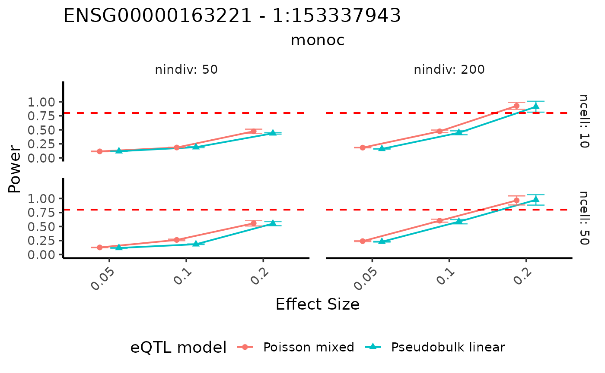
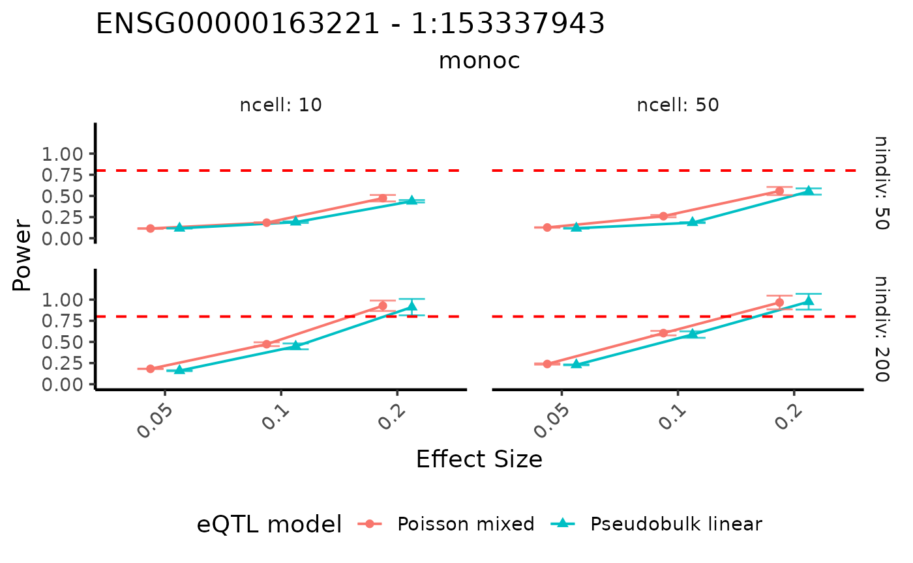

Power analysis based on user specified eQTL effect sizes
Chris Dong
Department of Statistics and Data Science, University of California, Los Angelescycd@g.ucla.edu
Yihui Cen
Department of Computational Medicine, University of California, Los Angelesyihuicen@g.ucla.edu
28 May 2026
Source:vignettes/scDesignPop-power-analysis-ES-specification.Rmd
scDesignPop-power-analysis-ES-specification.RmdIntroduction
In addition to data simulation, scDesignPop provides tools for simulation-based power analysis of cell-type-specific eQTL effects. This allows users to evaluate how study design and eQTL effect sizes influence the ability to detect eQTL signals.
In this tutorial, we demonstrate how to: - fit marginal models for
selected genes
- specify cell-type-specific eQTL effect sizes
- evaluate statistical power under different experimental designs
- visualize power curves across scenarios
This workflow is particularly useful for guiding study design and benchmarking eQTL mapping models under controlled settings.
Library and data preparation
We begin by loading the example dataset and selecting a subset of genes for demonstration. This reduces computational cost while illustrating the workflow.
library(scDesignPop)
library(SingleCellExperiment)
data("example_sce")
data("example_eqtlgeno")
example_sce_sel <- example_sce[c("ENSG00000163221","ENSG00000135218"),]
example_eqtlgeno_sel <- example_eqtlgeno[
which(example_eqtlgeno$gene_id %in% c("ENSG00000163221","ENSG00000135218")),
]We then construct the input data required for modeling. This step extracts expression, covariates, and genotype information and organizes them into a unified structure.
data_list_sel <- constructDataPop(
sce = example_sce_sel,
eqtlgeno_df = example_eqtlgeno_sel,
new_covariate = as.data.frame(colData(example_sce_sel)),
copula_variable = "cell_type",
slot_name = "counts",
snp_mode = "single"
)Fit marginal models
We next fit marginal models for each gene using
fitMarginalPop. These models describe how gene expression
depends on covariates and genotype, and serve as the basis for
downstream power analysis.
Here, we use a negative binomial model and include both individual-level random effects and cell-type effects.
marginal_list_sel <- fitMarginalPop(
data_list = data_list_sel,
mean_formula = "(1|indiv) + cell_type",
model_family = "nb",
interact_colnames = "cell_type",
parallelization = "parallel",
n_cores = 20L
)Perform power analysis
Given fitted marginal models, scDesignPop can perform
simulation-based power analysis for a selected gene–SNP pair using
runPowerAnalysis. This function evaluates how often an eQTL
is detected under user-specified effect sizes, study designs, and eQTL
mapping models.
In this example, we focus on gene ENSG00000163221 and
SNP 1:153337943, and assess power in classical monocytes
(monoc). The main arguments define the target cell type,
the assumed eQTL effect size scenarios, the sample-size settings, and
the methods (eQTL mapping models) used for testing.
Several inputs are particularly important:
-
celltype_specific_ES_listspecifies the effect size scenarios to evaluate. Each list element corresponds to one scenario and can assign effect sizes to one or more cell types. -
nindivsandncellsspecify the number of individuals and cells per individual, respectively, determining the study design. -
methodsspecifies the eQTL analysis methods to compare. -
alpha,snp_number, andgene_numberdetermine the significance threshold after multiple testing correction. -
power_nsimcontrols the number of simulation replicates used to estimate power, whileCI_nsimandCI_confcontrol the bootstrap confidence intervals.
Additional arguments such as nPool,
nIndivPerPool, and nCellPerPool can be used to
evaluate pooled sequencing designs when relevant.
set.seed(123)
power_data <- runPowerAnalysis(
marginal_list = marginal_list_sel,
marginal_model = "nb",
geneid = "ENSG00000163221",
snpid = "1:153337943",
celltype_colname = "cell_type",
celltype_vector = c("monoc"),
celltype_specific_ES_list = list(
c("monoc" = 0.05),
c("monoc" = 0.1),
c("monoc" = 0.2)
),
indiv_colname = "indiv",
methods = c("poisson", "pseudoBulkLinear"),
nindivs = c(50, 200),
ncells = c(10, 50),
alpha = 0.05,
power_nsim = 1000,
snp_number = 10,
gene_number = 800,
CI_nsim = 1000,
CI_conf = 0.05,
n_cores = 25
)
#> [1] 1.920313
#> [1] 0.05
#> [1] 1.920313
#> [1] 0.1
#> [1] 1.920313
#> [1] 0.2
#> [1] 1.920313
#> [1] 0.05
#> [1] 1.920313
#> [1] 0.1
#> [1] 1.920313
#> [1] 0.2Visualize power curves
The results can be visualized using visualizePowerCurve.
This allows us to examine how power varies as a function of effect size,
sample size, and analysis method.
In the plot below, we visualize power as a function of the specified effect size, stratified by the number of individuals and cells.
We expect power to increase with larger effect sizes, more individuals, and more cells per individual.
visualizePowerCurve(
power_result = power_data,
celltype_vector = c("monoc"),
x_axis = "specifiedES",
x_facet = "nindiv",
y_facet = "ncell",
col_group = "method",
geneid = "ENSG00000163221",
snpid = "1:153337943"
)
Alternatively, we can swap the faceting variables to view the results from a different perspective.
visualizePowerCurve(
power_result = power_data,
celltype_vector = c("monoc"),
x_axis = "specifiedES",
x_facet = "ncell",
y_facet = "nindiv",
col_group = "method",
geneid = "ENSG00000163221",
snpid = "1:153337943"
)
Session information
sessionInfo()
#> R version 4.2.3 (2023-03-15)
#> Platform: x86_64-pc-linux-gnu (64-bit)
#> Running under: Ubuntu 22.04.5 LTS
#>
#> Matrix products: default
#> BLAS: /usr/lib/x86_64-linux-gnu/openblas-pthread/libblas.so.3
#> LAPACK: /usr/lib/x86_64-linux-gnu/openblas-pthread/libopenblasp-r0.3.20.so
#>
#> locale:
#> [1] LC_CTYPE=en_US.UTF-8 LC_NUMERIC=C
#> [3] LC_TIME=en_US.UTF-8 LC_COLLATE=en_US.UTF-8
#> [5] LC_MONETARY=en_US.UTF-8 LC_MESSAGES=en_US.UTF-8
#> [7] LC_PAPER=en_US.UTF-8 LC_NAME=C
#> [9] LC_ADDRESS=C LC_TELEPHONE=C
#> [11] LC_MEASUREMENT=en_US.UTF-8 LC_IDENTIFICATION=C
#>
#> attached base packages:
#> [1] stats4 stats graphics grDevices utils datasets methods
#> [8] base
#>
#> other attached packages:
#> [1] SingleCellExperiment_1.20.1 SummarizedExperiment_1.28.0
#> [3] Biobase_2.58.0 GenomicRanges_1.50.2
#> [5] GenomeInfoDb_1.34.9 IRanges_2.32.0
#> [7] S4Vectors_0.36.2 BiocGenerics_0.44.0
#> [9] MatrixGenerics_1.10.0 matrixStats_1.1.0
#> [11] scDesignPop_0.0.0.9012 BiocStyle_2.26.0
#>
#> loaded via a namespace (and not attached):
#> [1] sass_0.4.10 jsonlite_2.0.0 splines_4.2.3
#> [4] bslib_0.9.0 assertthat_0.2.1 BiocManager_1.30.25
#> [7] GenomeInfoDbData_1.2.9 yaml_2.3.10 numDeriv_2016.8-1.1
#> [10] pillar_1.10.2 lattice_0.22-6 glue_1.8.0
#> [13] digest_0.6.37 RColorBrewer_1.1-3 XVector_0.38.0
#> [16] glmmTMB_1.1.9 minqa_1.2.8 htmltools_0.5.8.1
#> [19] Matrix_1.6-5 pkgconfig_2.0.3 bookdown_0.43
#> [22] zlibbioc_1.44.0 scales_1.4.0 lme4_1.1-35.3
#> [25] tibble_3.2.1 mgcv_1.9-1 generics_0.1.4
#> [28] farver_2.1.2 ggplot2_3.5.2 cachem_1.1.0
#> [31] withr_3.0.2 pbapply_1.7-2 TMB_1.9.11
#> [34] cli_3.6.5 magrittr_2.0.3 evaluate_1.0.3
#> [37] fs_1.6.6 nlme_3.1-164 MASS_7.3-58.2
#> [40] textshaping_0.4.0 tools_4.2.3 lifecycle_1.0.4
#> [43] stringr_1.5.1 DelayedArray_0.24.0 irlba_2.3.5.1
#> [46] compiler_4.2.3 pkgdown_2.2.0 jquerylib_0.1.4
#> [49] systemfonts_1.2.3 rlang_1.1.6 grid_4.2.3
#> [52] RCurl_1.98-1.17 nloptr_2.2.1 rstudioapi_0.17.1
#> [55] htmlwidgets_1.6.4 bitops_1.0-9 rmarkdown_2.27
#> [58] boot_1.3-30 gtable_0.3.6 R6_2.6.1
#> [61] knitr_1.50 dplyr_1.1.4 fastmap_1.2.0
#> [64] uwot_0.2.3 ragg_1.5.0 desc_1.4.3
#> [67] stringi_1.8.7 parallel_4.2.3 Rcpp_1.0.14
#> [70] vctrs_0.6.5 tidyselect_1.2.1 xfun_0.52